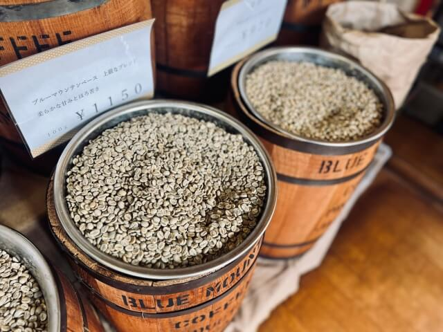
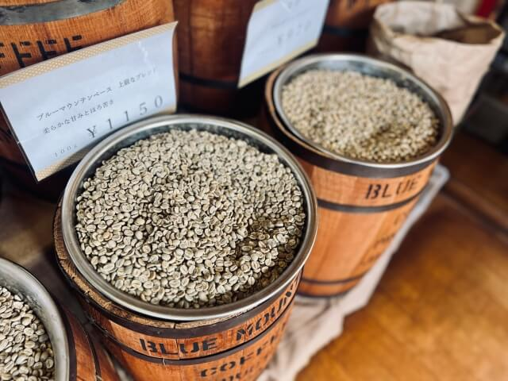

1杯の珈琲には、 そっと心をほどく小さな物語があります──
静かに立ちのぼる香りは、 ふとした思い出を呼び起こすようにやさしく、
ひと口ふくむたびに、時間がゆっくりとほどけていく。
深みのある苦味も、ふんわりとした甘みも、 その日の気分にそっと寄り添い、 あなたのひとときを静かに彩ります。
Every cup of coffee carries a quiet story, one that gently unwinds the mind. Its rising aroma stirs
familiar memories, and with each sip, time seems to soften into a slow, comforting moment. A touch
of bitterness, a hint of sweetness— each note settling in harmony, quietly accompanying your day.
Beans ― 豆を選ぶ時間
1杯のために選ぶ豆は、 その日の気分や季節にそっと寄り添うようなものを。 手にのせた瞬間に漂う香りや、豆のかたち、触れたときの温度。 小さな違いが、あとから大きな味わいになります。
 

Roast ― 焙煎で息を吹き込む
豆の色が少しずつ深みを帯び、 香りが静かに立ちのぼる瞬間があります。 焙煎は、時間ではなく“香りの合図”で決まるもの。 焦らず、急がず、豆が話しかけてくるタイミングを待ちながら、 ひとつひとつていねいに火を入れていきます。
Grind ― 挽く音が生むリズム
豆の種類や焙煎度合いによって、 ほんの小さな粒度の違いが、 香りの広がりや後味に静かに影響していきます。 その日の空気や気分に合わせて、 最適な挽き目を選ぶことも、 珈琲づくりの大切な楽しみです。

Brew ― 1杯が生まれる瞬間
お湯を落とした最初の瞬間、 ふわりとふくらむ香りが、深い呼吸を誘います。 温度、蒸らし、時間。 どれも正解はひとつではなく、 ゆっくりと耳を澄ませるように、 その1杯の最も美しい落ち着きどきを探していきます。 そして最後の1滴が落ちたとき、 ようやく、今日の1杯が物語を持ちはじめます。